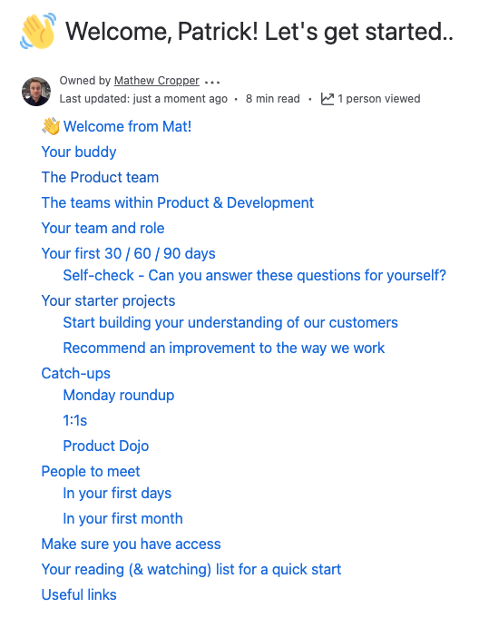
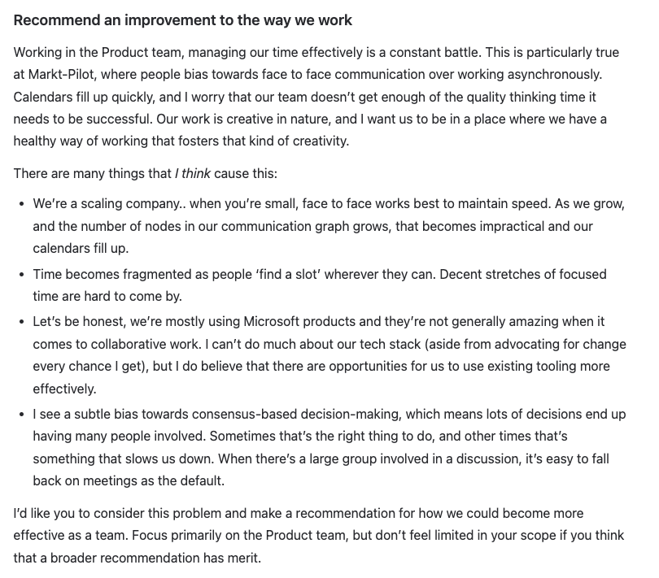
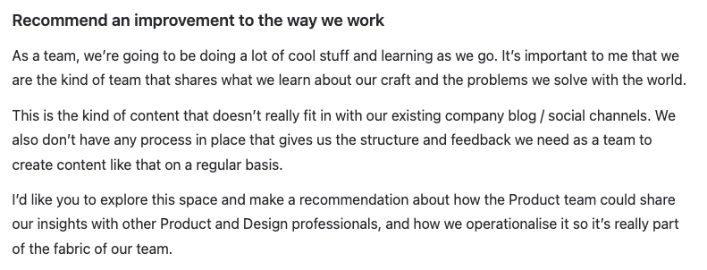
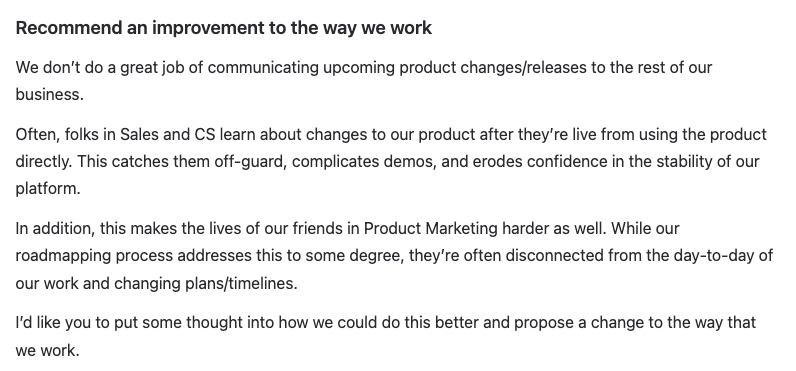
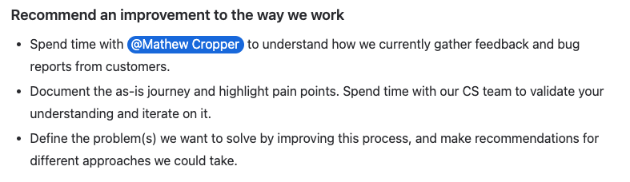

4 months. 7 Product Managers and Product Designers onboarded. 1 takeaway that I found especially impactful.
Whenever someone joins my team, the first thing I think about is how I help them get their first win and start building a pattern of success that will set them up for the long term. Success creates success, so having impact early is so very important.
As part of everyone's onboarding, they will generally get three 'starter projects'. One related to in-flight work in their team, one related to building customer relationships/insights, and one to recommend an improvement to the way we work.
That last one — recommending an improvement — has so far been the most predictable win and the kind of thing that has an outsized impact on the team/business. It's a guaranteed win for everyone in their first weeks in the company, and is a catalyst for building relationships and context.
Some examples of problem domains I've asked people to explore so far:
Turning a frustrating bug/feedback process into something that's effective and genuinely useful for all involved.
Creating a way for us to more proactively keep the company informed about upcoming product releases.
Iterating on our onboarding process to make it more valuable to new joiners.
Recommending ways that we can share our learnings and insights with people outside the company who are interested in the craft of Product Management or Product Design.
Exploring how we can work differently to create more thinking/focus time within the team and avoid calendar overload.
The feedback on this particular kind of starter project has been uniformly positive. People say that it was amazing to have real impact on real internal problems so soon, that it helped them build relationships more quickly than if they'd just been having coffee chats or waiting for opportunities to arise naturally, and that the problems themselves were genuinely interesting brain-teasers for them.
How are you nurturing a repeating pattern of success in your team? How do new members of your team get their first, predictable win under their belt?
In case you're interested, a few screenshots of what our team onboarding plans look like...

The contents of our onboarding doc
And here are some examples of the 'recommend an improvement' starter project briefs:



